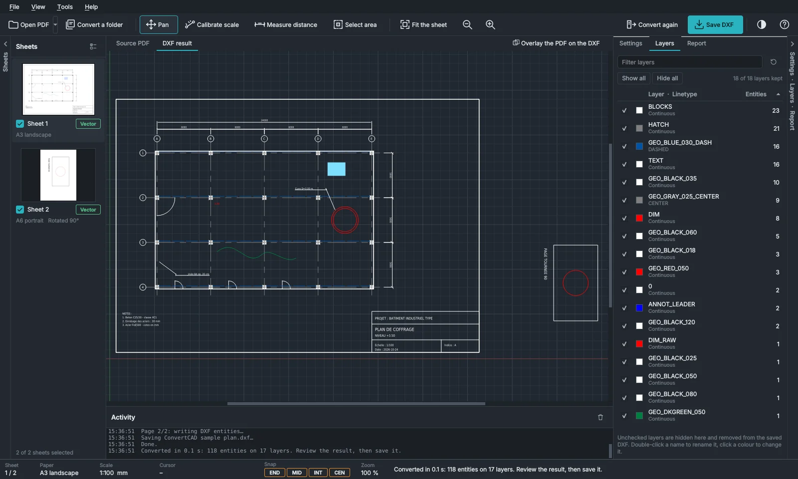
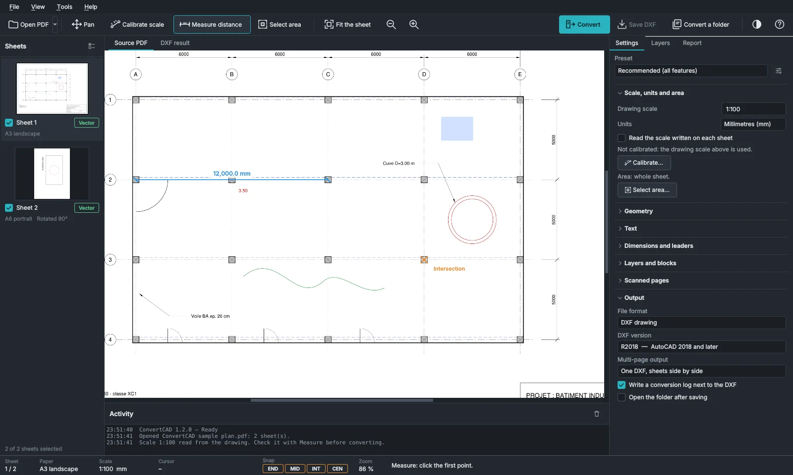
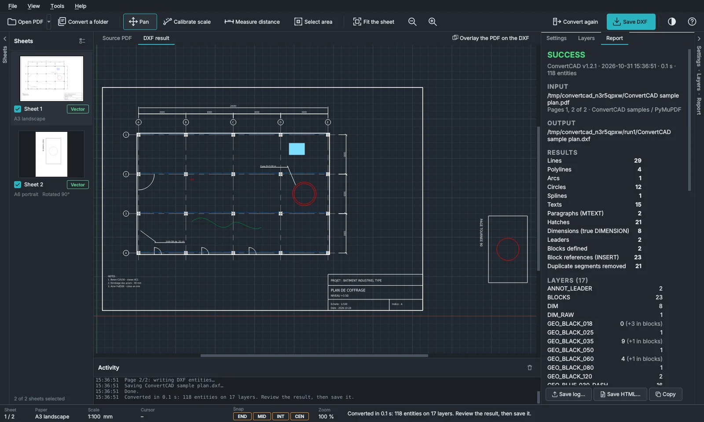

Turn PDF drawings back into editable CAD files.
ConvertCAD rebuilds the lines, arcs, dimensions, hatches, blocks and text of a 2D PDF plan as real DXF and DWG entities, on your own computer.
Free and open source. Windows 10/11 and Linux.



What ConvertCAD does
It rebuilds the intent of the drawing, not just its strokes, and it never sends your drawings anywhere.
Real CAD entities
Linear, radius, diameter, angle and arc length dimensions. Blocks for repeated symbols at any angle. Hatches, including sand, concrete and brick. Dashed linetypes and editable text.
Scanned drawings too
Lines, circles and arcs of a scan are traced, and its text is read in more than 50 languages, including Arabic.
Checked before you save
The scale is read from the title block or calibrated on two points. Measure with object snaps, overlay the PDF on the result and read the report. Doubtful values go to a review layer.
DXF and DWG, your way
DXF from R12 to 2018 and DWG. One file or one file per sheet, a selected area only, or a whole folder at once from the command line.
Your drawings stay on your computer
Every conversion runs locally. No account, no upload, no tracking. The program goes online only when you download an OCR language or check for a new version, and the update check is off by default.
Open source, nothing hidden
The full code is public under the GNU AGPL, so anyone can check what the program does. The portable version runs without installation or administrator rights.
Download
Everything is included: the DWG converter and the text recognition. Nothing else to install.